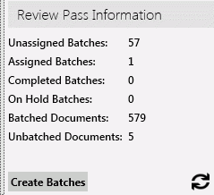
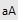
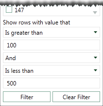
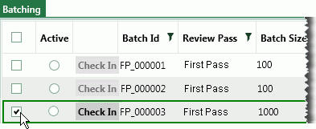
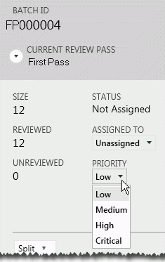
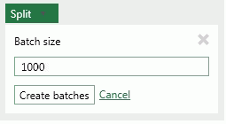

Once review passes and batches are created, manage them as needed in Eclipse. For example, evaluate review pass and batch statuses, change assignments, or split large batches.
This page contains the following content:
Complete the following steps to work with review passes in Eclipse:
Log in to Eclipse as an administrator and open the case of interest.
In the Case View pane, click Case Administration, and then Review Pass Management.
In the list of review passes, click the review pass of interest. If the list is long, take any of the following actions to find the needed review pass:
Scroll vertically and/or horizontally.
Drag the list’s borders to make it wider.
Sort
the list by clicking the sort button,  , and choosing
from the different options. Click a selected option again to reverse the
sort order.
, and choosing
from the different options. Click a selected option again to reverse the
sort order.
In the search box above the list, start typing any of the following items: the review pass name, the name of the administrator who created/modified the review pass, or part of the created/modified date. This is a plain text search that searches these items in order.
To evaluate details (total number of documents in the review pass, number of batched and unbatched documents, and so forth) for an individual review pass:
Complete Get Started above.
For the selected review pass, click  in the Review
Pass Information area.
in the Review
Pass Information area.
Evaluate details in the area. The following figure shows an example.

After a review pass is defined, you can change any part of its definition.
|
|
Note: If batches have already been created, some changes will have no effect on existing batches (for example changing batch size). Changing the search upon which the review pass is based will add documents that were not results of the first search to the review pass. |
To change a review pass definition:
Complete Get Started above.
For the selected review pass, click  and make needed changes.
For details on options, see Review
Pass Basics.
and make needed changes.
For details on options, see Review
Pass Basics.
When finished, click Save.
Inform users of changes.
To export details (name, creation/modification dates, and so forth) for all review passes defined for a selected case:
Complete Get Started above. (Note that results will be the same whether or not a specific review pass is selected.)
Below the list of review passes, click Export to CSV.
In the Save As dialog box, navigate to an appropriate location for the file, enter a file name, and click Save.
Open the file in an appropriate program.
To delete a review pass (all batches will also be deleted):
Complete Get Started above.
For the selected review pass, click  , then click Yes
in response to the confirmation message.
, then click Yes
in response to the confirmation message.
The Batching tab in Eclipse allows you to perform several batch management activities.
For the procedures in this section:
Log in to Eclipse as an Eclipse administrator and open the needed case or batch.
For an overview of batch status, review the Case Details Dashboard as explained in the Eclipse Web End User Help.
Continue with the procedures in the remainder of this section.
It may be useful to sort or filter the list of batches so that you can evaluate and/or select from a specific set of batches.
To filter Batching tab details:
Log in to Eclipse and open the needed case.
In the Case View pane, click Batches. The Batching tab opens.
Locate the column by which you want to filter
the list and click the funnel button  , then complete
step 4 or 5 as needed.
, then complete
step 4 or 5 as needed.
To select from existing column entries, click one or more options in the top part of the Filter dialog box.
To define more complex criteria, select filtering criteria in the bottom of the Filter dialog box:
Select a needed criterion from the first list. Several options exist, such as Is Equal To, Starts With, or Does not contain.
In the field under the first criterion list, enter the details by which you want to filter.
If the entry in step b includes text for which capitalization is important, enter the details using the needed case and click the

button.If you want to include a second criterion, select the needed connecting operator, And or Or, and repeat steps a – c in the bottom part of the dialog box. This figure shows filtering by a particular range of batch size:

When the filtering criteria is defined, click Filter.
To filter by an additional column(s), repeat this procedure for the additional column(s).
Click Filter.
To clear filtering:
Locate
the filtered column and click .
In the Filter dialog box, click Clear Filter.
Repeat to clear other columns.
To sort details on the Batching tab:
Log in to Eclipse and open the needed case.
In the Case View pane, click Batches. The Batching tab opens.
Locate and click the column heading by which you want to sort. The column will first sort in ascending order. Sorting is indicated by a small triangle above the column name.
To change to descending order, click the heading again.
To evaluate details (such as number of documents reviewed, not reviewed, and on hold) for individual batches:
Complete Get Started above.
Review the details on the Batching tab and/or select one or more batches to review by clicking the option(s) in the left column of the table as shown in this figure.

After a batch is selected, review details in the tab and in the pane on the right side of the window. If multiple batches have been selected, then the values will be a sum of individual batch details.
The following table lists the details on the Batching tab and the following figure shows the features of the batch details pane.
|
Item |
Description |
|
Select batch options |
The leftmost columns of the tab allow users to select or check out/check in a batch(es):
|
|
Batch Id |
Batches are numbered sequentially for each review pass. |
|
Review Pass |
The review pass to which each batch belongs. |
|
Batch Size |
The number of documents in each batch. |
|
Unreviewed Count |
The number of documents not started/in process. |
|
Reviewed Count |
The number of documents for which the review is completed (tagged as Reviewed). |
|
On Hold Count |
The number of documents set to On Hold, indicating some issue with the documents. This status can be selected in the right pane on this tab. |
|
Group By Value |
If
your administrator defined a review pass to create batches
based on a field’s value (or an |
|
Batch Priority |
The priority of each batch (as defined by administrator; can also be selected in the right pane on this tab). The exact meaning of each priority should be based on the needs of your organization. Contact your administrator if you have any questions about priority settings. |
|
Assigned To |
The person assigned to a batch (either explicitly by the administrator or implicitly by the person selecting the batch when they log in; can also be selected in the right pane on this tab). |
|
Last Check-In |
The date and time the reviewer last checked in a batch. |
|
Batch Status |
Current condition of the batch (by default, status will change based on reviewer assignment or action; can also be selected in the right pane on this tab.) |

To change batch settings:
Complete Get Started above to access the Batching tab.
Select the batch(es) to be changed by clicking the option(s) in the left column of the table as shown in the previous figure.
Complete one or more of the following steps in the batch details (right) pane of the Batching tab.
To change the reviewer assigned to the batch(es), select the needed name from the ASSIGNED TO list.
To change the priority of the batch(es), select the needed setting from the PRIORITY list as shown in the following figure:

To place the batch(es) on hold, select True from the ON HOLD list. Or, to reactivate a held batch, select False.
When finished, inform users of changes.
After all documents in a batch have been reviewed (all coding form rules have been met and/or required tags applied), the batch can be marked as complete:
Complete Get Started above to access the Batching tab.
Locate a batch in which all documents have been reviewed. If it is not active, Click the Active option for the batch.
Click Check In.
In the resulting dialog box, click Completed and click OK.
Repeat this procedure for other completed batches.
If a batch proves to be too large for a single reviewer, it can be split into smaller batches, with the following conditions:
Be aware that if you split a batch created with the Family Field option, family documents will no longer be together in a single batch.
If a batch is partially reviewed, only unreviewed documents will be split. The original batch will contain the reviewed documents.
If all documents in the batch are unreviewed, all documents will be split and the original batch will be left with zero documents.
Split batches are not assigned to a reviewer, even if the original batch was assigned to someone.
Split batches are assigned an available number in the numbering sequence.
To split a large batch:
If reviewers might be working in the batches you will be splitting, you may want to inform them that the batches will be changing and that should stop reviewing until changes are made.
Complete Get Started above to access the Batching tab.
Select one or more batches that are to be split in the same way by clicking the leftmost option(s) on the Batching tab as shown in the following figure.
In the batch details (right) pane, click Split Batches.
Delete the default batch size and enter the needed batch size. Minimum batch size is 10.
Note that the batch size displayed is the default batch size, not necessarily the size of the selected batch(es). In the following example, you might want to split the selected batch(es) into ten 100-document batches.

Click Create batches and wait as the batches are created.
Assign the new batches to reviewers and/or take other batch management actions.
Inform reviewers about the batches and provided needed instructions.
It may be useful to save batch details (contents of the Batching tab) to a spreadsheet. To save Batch Management window details to a .CSV file:
Complete Get Started above to access the Batching tab.
As needed, filter the tab details by batch
set and/or status. Click
at the bottom of the tab to ensure all data are refreshed.
Click Export to CSV, then Run.
In the Save dialog box, navigate to an appropriate location for the file, enter a file name, and click Save.
Open the file in a spreadsheet or other appropriate application.
To delete batches:
Complete Get Started above to access the Batching tab.
Locate one or more batches to be deleted; select them by clicking the leftmost option(s) on the Batching tab.
When all batches have been selected, click Delete this batch (or selected batches) in the right pane.
In response to the confirmation message, click Yes. All documents in the deleted batch are indicated in the review pass as unbatched.
Inform users of changes regarding available batches.